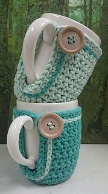

¡QUE SE VEA SIEMPRE LINDA!
Qué lindo es ver nuestra casa limpia, ordenada, pero sobretodo con esos pequeños detalles que hacen la diferencia.
- Centros de mesa
- Caminitos
- Individuales
- Fundas de almohadones
- Abrigos para tazas
- Atrapasueños

Aparte de lana, otro fabuloso material que acompaña nuestros productos deco hogar es la arpillera. Se conoce como arpillera a la pieza textil gruesa y áspera fabricada con diversos tipos de estopa (de cáñamo o de yute) que suele utilizarse como elemento cobertor, y en la fabricación de sacos y piezas de embalaje. Mientras está siendo fabricada, se la sumerge en queroseno para apartar de la misma alimañas como los gusanos. El tejido de arpillera se usa también en la confección de ropa, tapicería y decoración. Sobre su superficie pueden realizarse trabajos de artesanía, bordados y pinturas.